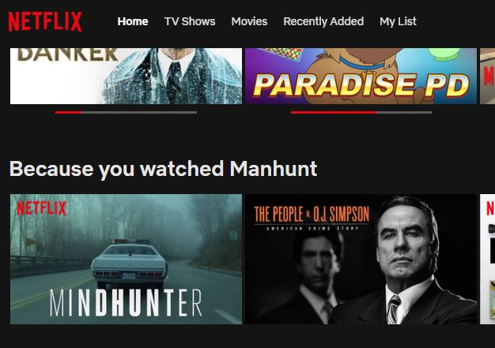
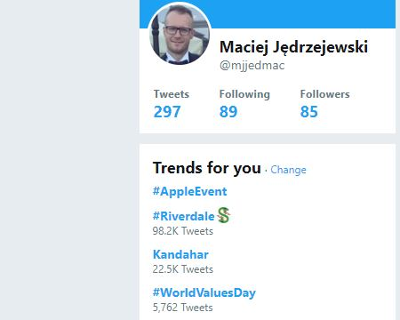

Zainteresowania od Angulara, poprzez .NET, aż do machine learning. W wolnych chwilach piszę swój pierwszy kryminał i oglądam nałogowo polską ekstraklasę kopaną.
Jeżeli chcesz się ze mną skontaktować, zapraszam na jeden z kanałów:
Po co z niego korzystać? Czy zawsze? Jakie korzyści może przynieść w mojej aplikacji? Analiza danych?!
Czy machine learning to deep learning?
AI, machine learning, deep learning, usługi kognitywne - czy możemy zamieniać te wyrażenia?
Jak wygląda proces tworzenia aplikacji?
Dowiedziałem się co to machine learning! Zrobię mega aplikację! - czy to dobre podejście?
Algorytmy
Podział algorytmów w ML.NET
Machine learning - hands on
Stworzymy od zera aplikację do klasyfikacji opłacalności kupna samochodu
"Field of study that gives computers the ability to learn without being explicitly programmed." - Arthur Samuel (1959)
Machine learning nie jest trywialny.
Najważniejsze są przede wszystkim modele i algorytmy.
W przypadku, gdy zastosujemy niewłaściwy algorytm lub źle zamodelujemy odwzorowanie rzeczywistości - nasz system będzie w najlepszym razie niewydajny.
<div id="machineLearning">
<!-- Here we do the magic -->
<section>
<h1>Magic!</h1>
</section>
</div>
Machine learning to rewolucja.
Jesteśmy na początku drogi w zastosowaniach komercyjnych, a już przynosi wymierne efekty.
Cała masa zastosowań - od predykcji wyników finansowych, przez wsparcie użytkowników, aż po klasyfikację chorób nowotworowych.
Każda branża jest potencjalnym odbiorcą.
Spróbuj znaleźć takie obszary w swoich aplikacjach. Sugestie, prognozy, rozpoznawanie obrazów - to tylko niektóre, najczęściej spotykane na co dzień usprawnienia w aplikacjach biznesowych.
Przykłady z popularnych serwisów

Netflix
Facebook

Twitter
Machine learning to potencjalny problem.
Większość z nas jest w stanie rozwiązać trywialny scenariusz.
Niestety, na co dzień spotykamy się ze złożonymi problemami. Bardzo ważnym jest wtedy, żeby odpowiednia osoba była odpowiedzialna za poszczególne etapy.
Wielu data scientistów chciałoby zaprogramować to, co wymodelowali. Brakuje im wiedzy i doświadczenia w programowaniu.
Wielu programistów chciałoby zamodelować to, co zaprogramują. Brakuje im wiedzy czysto matematycznej i doświadczenia w modelowaniu.
Machine learning to nie jest to samo co deep learning.
Deep learning to odnoga machine learning. Rozszerzone o inteligencję kognitywną.
Jak wygląda proces tworzenia aplikacji?
Analiza
Dokonujemy analizy rzeczywistego bytu. Definiujemy jakie będą elementy wejściowe, czego oczekujemy na wyjściu
Model matematyczny
Najważniejsza część. Na jego podstawie dobierzemy w późniejszym kroku odpowiedni algorytm
Dane treningowe
W naszym przypadku uzupełniamy je o wartości atrybutów wejściowych oraz to, co chcemy uzyskać na wyjściu
Learning pipeline
Tworzymy pipeline, następnie uzupełniamy go o dane treningowe
Algorytm
Dobieramy odpowiedni algorytm do naszego scenariusza
Wynik
Uruchamiamy model i oczekujemy na rezultat
Podział algorytmów w ML.NET
A mówili, że będzie łatwo.
Regresja
Kiedy? W przypadku, gdy chcemy przewidzieć liczby np. notowania giełdowe, opłata za przejazd.
Anomalia
Kiedy? W przypadku, gdy chcemy wykryć anomalię, np. defraudację pieniędzy w systemie bankowym.
Klasyfikacja dwuklasowa (binarna)
Kiedy? W przypadku, gdy chcemy zapytać o odpowiedź pozytywną/negatywną. Tak/nie. Akceptowalny/Nieakceptowalny. Dobry/zły.
Klasyfikacja wieloklasowa
Kiedy? W przypadku, gdy chcemy na wyjściu uzyskać jedną z kilku odpowiedzi (> 2) na podstawie zadanych atrybutów wejściowych.
Gotowi na demo?
"Karma of humans is AI." - Raghu Venkatesh
Pytania?
Dzięki za uwagę!
Jeżeli będziesz miał do mnie pytania po prezentacji - zapraszam do kontaktu